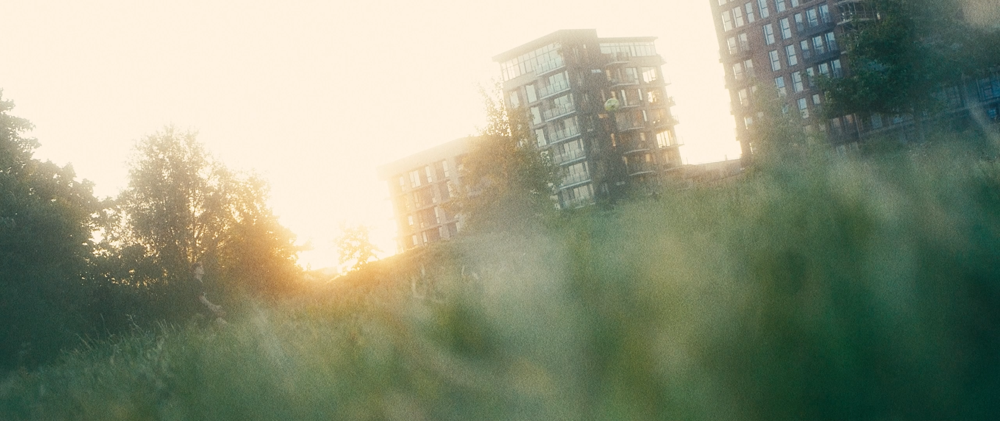
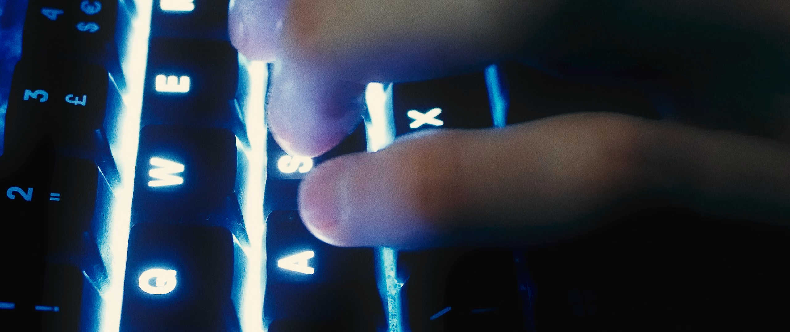
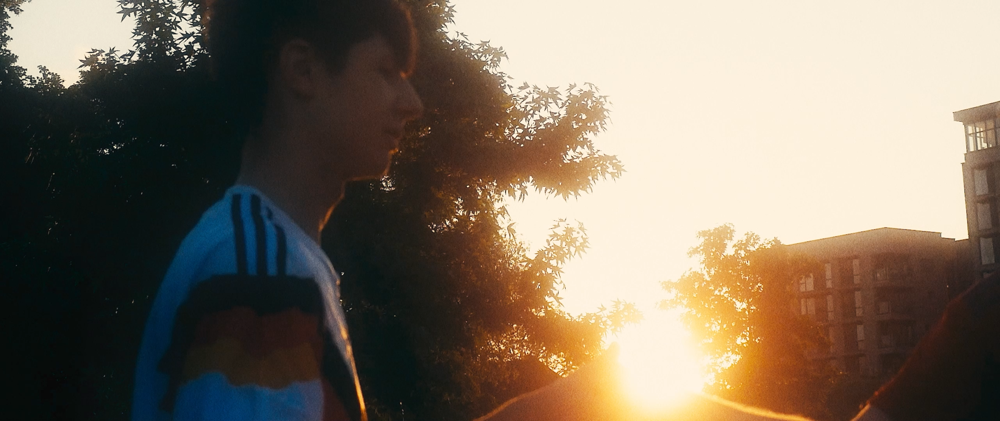
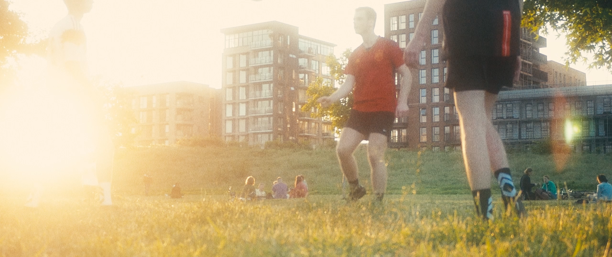
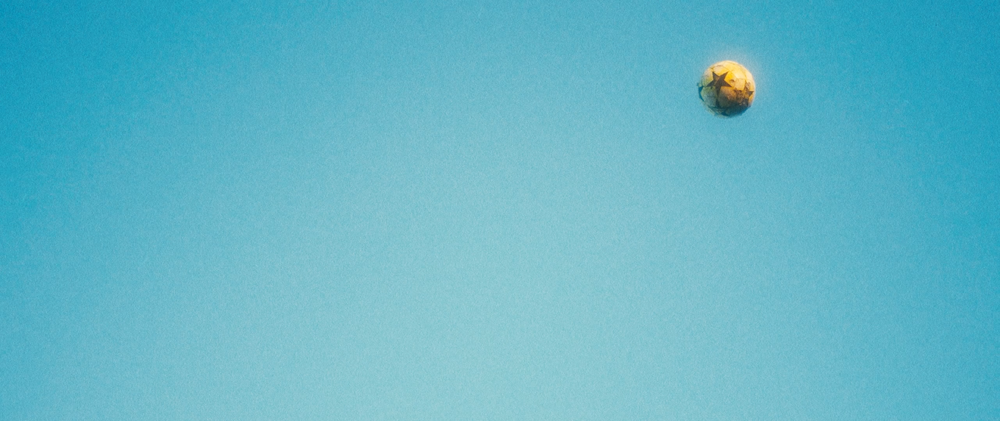
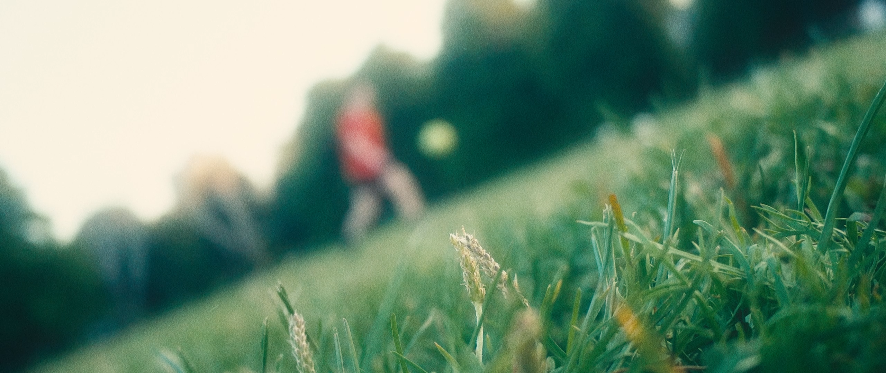
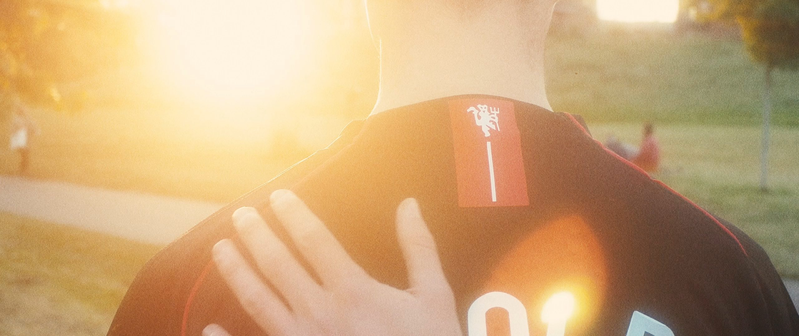

Short Film
2023
Process
A silent short film about how football connects people in the digital age
Stills from the short film. The intention of the project was to create a nostalgic feeling around football, juxtaposing this with the sterility of the digital age.






